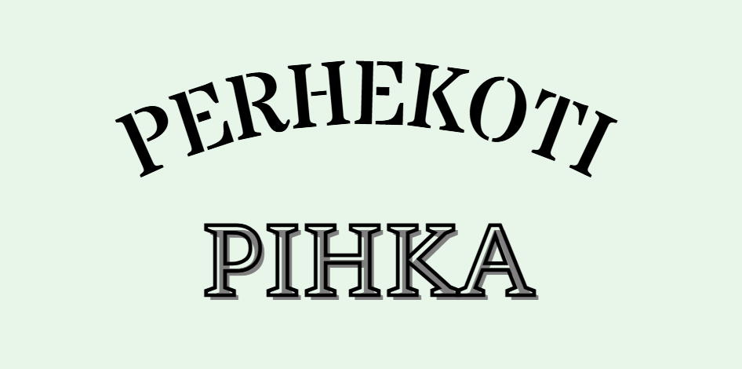
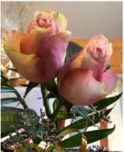
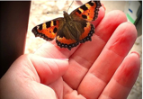

Perhekoti Pihka tarjoaa pitkäaikaista ja lyhytaikaista perhehoitoa
ikäihmisille.
Asumme koirien kanssa Polvijärvellä 7 km päässä keskustasta
ja kilometrin päässä isosta tiestä. Metsien ja peltojen
ympäröimänä, pihapiirissä on navetta ja aitta. Kotimme on kahdessa
kerroksessa, pesutilat sijaisevat alakerrassa minne on portaat.
Huoneista kaksi on yhden hengen ja yksi kahden hengen huone. Avoin
keittiö-olohuonetila. Pihapiirimme tarjoaa rauhallisen ympäristön
erilaisille toiminnoille.
Lue lisää
Perhehoito ikääntyneille
palvelusta.
Meistä
Esa Leininen
Marjo Tanskanen
Esa harrastaa metsästystä ja kesäisin kalastusta. Olen kova penkkiurheilija. Uutiset, urheilu ja luontodokumentit kuuluvat päivään. Minulla on aina pientä nikkarointia ja puuhastelua menossa ja huolehdin kiinteistöstä. Opiskelen suntion/seurakuntamestarin ammattia.
Marjo nauttii luonnon pienistä ihmeistä. Tykkään kokkailla ja leipoa. Erityisosaamistani ovat vanhustyö ja saattohoito. Olen lähihoitaja ja koulutettu hieroja. Molemmista erikoisammattitutkinnot.
Pelisäännöt
Meidän kotimme on savuton. Yömyssy on mahdollista perhehoitajan antamana. Vieraat ovat tervetulleita, etukäteen sovittuna aikana. Poikkeuksista sovitaan aina perhehoitajan kanssa erikseen. Kunnioitetaan toisiamme ja annetaan jokaiselle oma rauha.
Arvot

Tasa-arvoiseen ja kristilliseen arvopohjaan perustuva
yksilöllisyyttä kunnioittava perhekoti.
Meillä saat hoivaa ja huolenpitoa elämäsi loppuun asti.